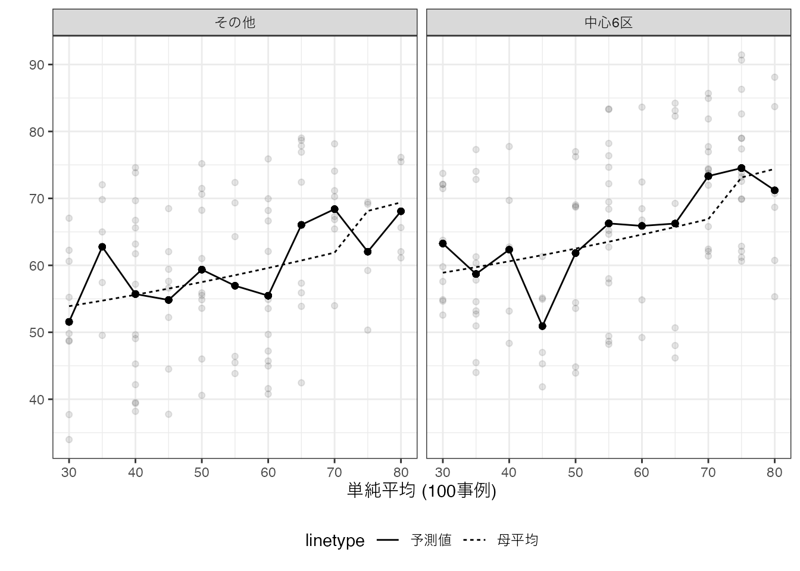
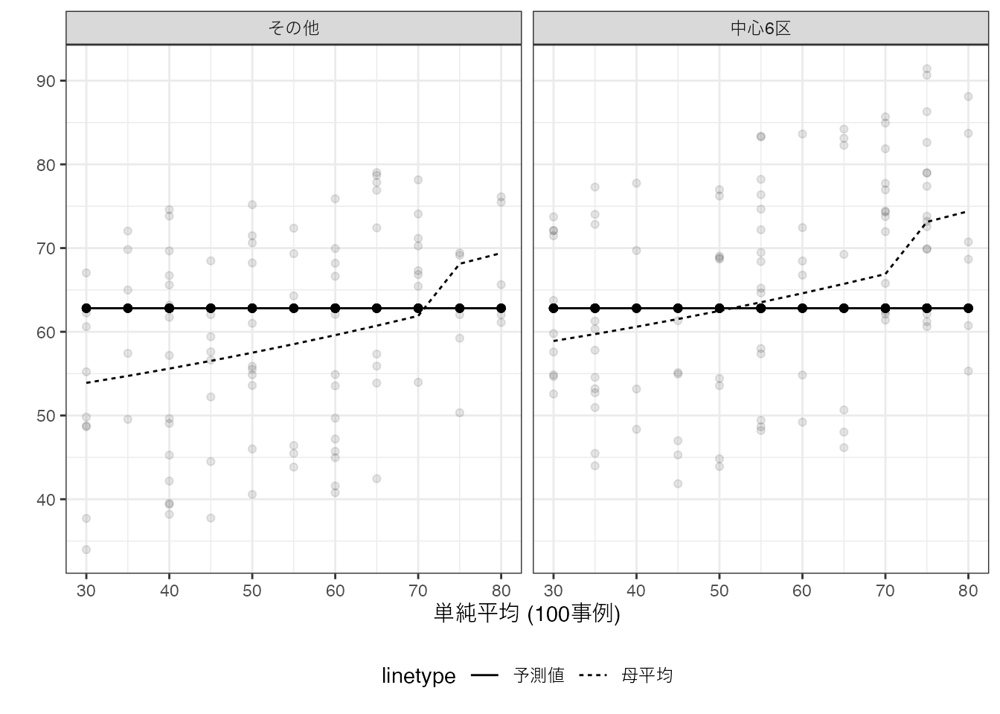
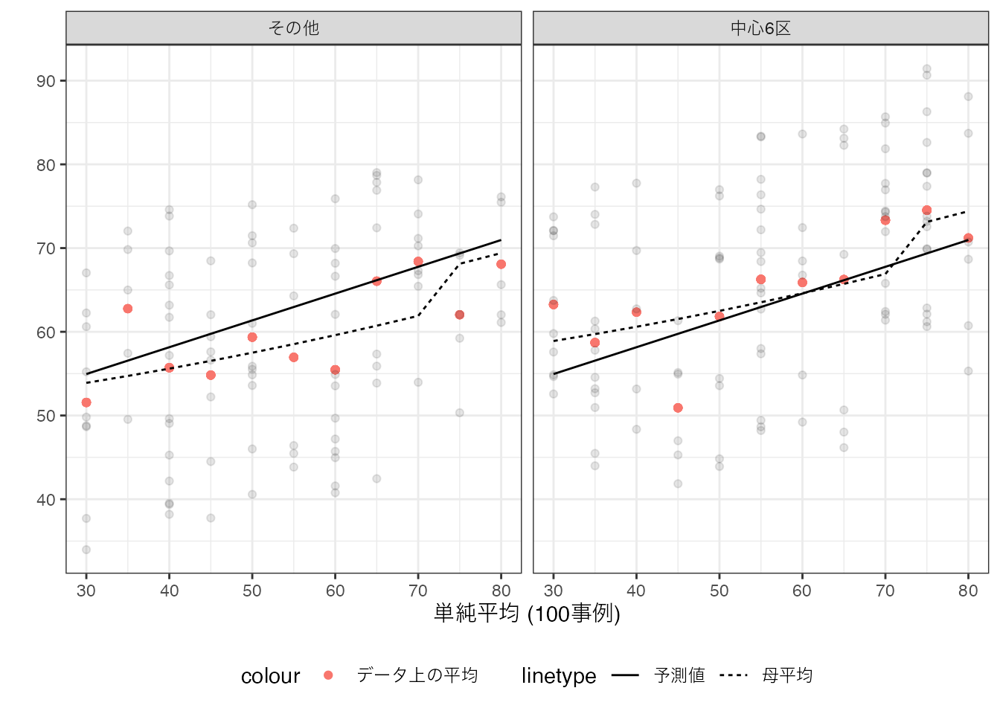
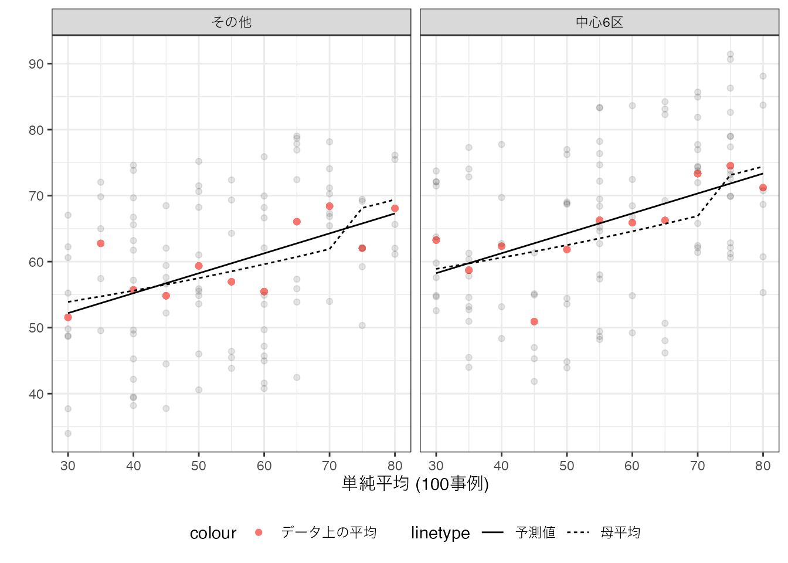
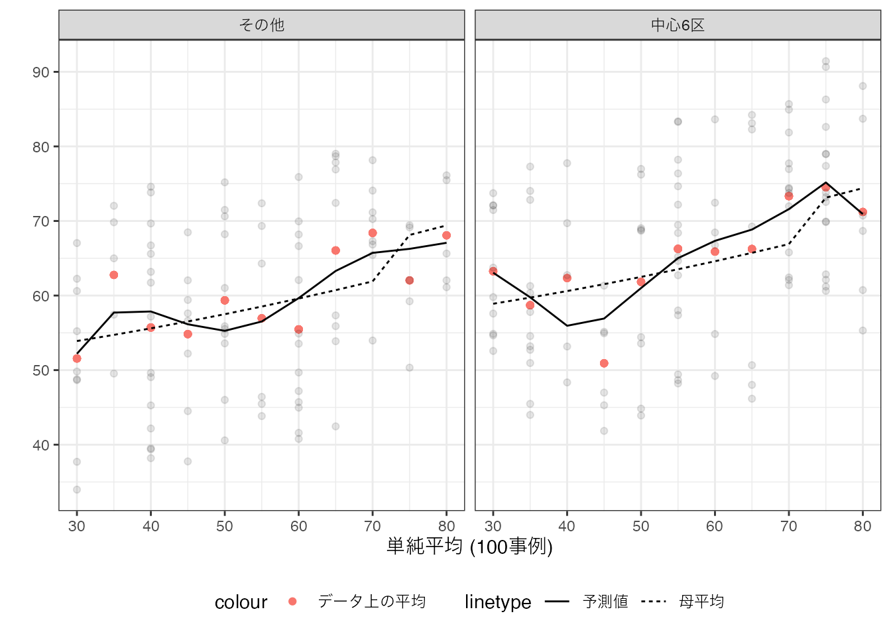
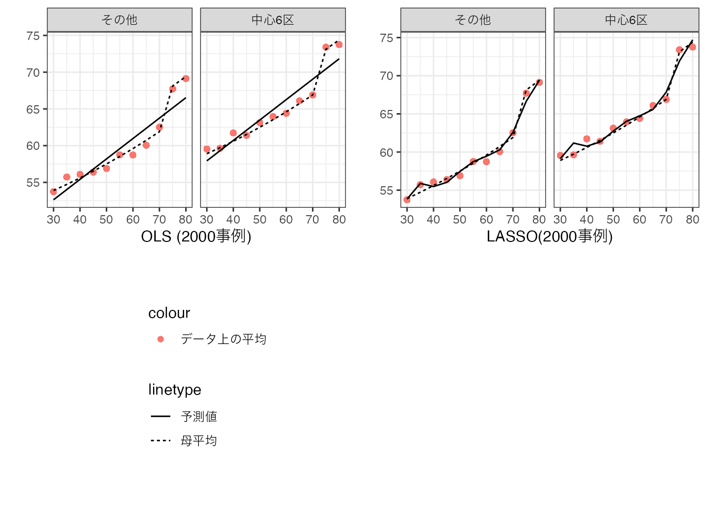

3 予測を目的とする要約
予測を目的とするでは、観察できる変数 \(X\) から意思決定に必要だが欠損している情報 \(Y\) を予測するモデル（予測モデル）の推定を目指します。 以下のような例があげられます。
視聴履歴やいいね数 \((X) \underbrace{\rightarrow}_{予測モデル}\) 好む未視聴動画 \((Y)\)
メールの文名や件名 \((X) \underbrace{\rightarrow}_{予測モデル}\) 迷惑メール \((Y)\)
事業の内容や財務状況 \((X) \underbrace{\rightarrow}_{予測モデル}\) デフォルトリスク \((Y)\)
もし\(Y,X\) が共に観察できるデータを活用できれば、統計学や機械学習分野によって、推定方法がある程度確立されています。
3.1 推定目標
本ノートでは、データと同じ母集団から新たに抽出された事例を、予測するモデルの推定を目指します。 予測能力は、平均事情誤差で測定します \[母集団における平均二乗誤差 = (Y - 予測値)^2 の母集団における平均\] 注意が必要なのは、母集団における平均二乗誤差は、母集団上の値であり、直接観察することは不可能です。 ただし本章で紹介する通り、推定することは可能です。
3.1.1 完璧な予測モデル
予測研究における究極的な目標の一つは、 \(Y\) を完璧に予測するモデルの推定です。 しかしながら多くの応用で、この目標には到達することができません。 予測モデルは、ある\(X\)の組み合わせについて、一つの予測値のみを出力します。 このため母集団において、同じ\(X\) 内で\(Y\) の値にばらつきがあれば、予測が外れる事例は必ず存在します。
完璧な予測には、\(Y\)の全ての決定要因を\(X\)として観察し、\(X\)内での個人差をなくす必要があります。 しかしながら人間行動や社会的な事象などの社会的変数の決定要因は無数に存在し、その多くは観察が難しいと考えられます。 結果、社会的変数について、完璧な予測は不可能と考えられます。
3.1.2 理想の予測モデル
最も高い予測性能 (母集団における平均二乗誤差が最小化)を達成する予測モデルは、母平均であることが証明できます \[理想の予測モデル = X内でのYの母平均\]
予測研究においては、データから推定した予測モデルを理想の予想モデルである母平均に極力近づけることが、実質的な目標となります。 具体的には以下の予測誤差を極力削減することを目指します \[(\underbrace{X内でのYの母平均}_{理想の予測モデル}-予測モデル)^2の母平均\]
3.2 推定方法
手元のデータから、母平均を推定するため方法として、二つの極端な方法を紹介し、その中間的な方法として線型モデルを最小二乗法(OLS)で紹介するアプローチ、およびその発展として罰則付き回帰 (ここではLASSO)を紹介します。
3.2.1 learning by memorization (丸暗記法)
データ上の\(Y\)の平均値を予測モデルを推定する方法であり、learning by memorization (丸暗記法) とも呼ばれます。 この方法は、\(X\) の各組み合わせについて、十分な事例数があれば、実用的な方法です。 なぜならば、データ上での平均値と母平均が近い値となることが期待できるためです。
しかしながらほとんどの応用で、事例数の少ない \(X\) の組み合わせが存在します。 このような場合、データ上の平均値は、母平均からかけ離れた値となってしまいます。
Section 2.3 の数値例を用いた予測モデルは、以下となります。
点線が母平均、実線が丸暗記法が生み出した予測値となります。 母平均と予測値が、大きく乖離するグループが散見されます。 このような乖離は、データが母平均よりも上振れ/下振れしたケースにおいて、見られることも確認できます。
3.2.2 単純平均
少数事例の要約を避けるためには、より”荒い”要約が必要となります。 最も極端な方法は、\(Y\) のデータ全体での単純平均を予測値とする方法です。
数値例は以下です。

単純平均法では、予測値は\(X\)の値に依存せずに一定です。 このため丸暗記法に比べて、予測モデルが単純化されてると言えます。 ただし\(X\) と \(Y\) の母平均との間での関係性を一切無視した集計になっており、依然として母平均との乖離が生じています。
3.2.3 OLS
多くの実践において、丸暗記法と単純平均法の中間的な要約が有効です1。 なぜならば丸暗記法は、複雑なモデルの推定を試みており、母平均から乖離した事例の影響を受けやすく、単純平均法は単純すぎるモデルの推定を行なっており、母平均の特徴の多くを無視しているためです。
単純平均と丸暗記法の中間的なモデルを推定する代表的な方法は、研究者が事前に設定した線型モデルを最小二乗法 (OLS) で推定する方法です。
OLSの定義
研究者が予測モデルの大枠を以下のように設定する \[予測モデル=\beta_0 + \beta_1X_1 + \beta_2X_2 +.. + \beta_LX_L\]
以下を最小化するように \(\beta_0,..,\beta_L\) を決定する \[(Y-予測モデル)^2のデータ上の平均\]
OLSは、研究者が事前に大枠を設定した予測モデルを、データに最も合うように推定する手法であると解釈できます。
3.2.3.1 単回帰
最もシンプルな線型モデルとして、例えば以下を推定してみます。 \[予測値 = \beta_0 + \beta_1\times Size\] \(\beta_0,\beta_1\) は、以下のデータ上の平均二乗誤差を最小化するように推定します。\[(Y - 予測値)^2 のデータ上の平均\] このような推定方法は、単回帰として教科書では紹介されてきました。
推定結果を図示すると、以下となります。

単純平均とは異なり、広い物件は取引価格が高くなる傾向を捉えることができています。 さらに丸暗記法ほど、母平均から大きく乖離した予測も見られません。 これは丸暗記法と比べて、事例の要約が機能していることを表しています。
しかしながら母平均に比べると、以前として単純すぎます。 特に立地に応じて、平均価格が異なるという性質を捉えきれていません。
3.2.3.2 重回帰
Districtと平均取引価格の関係性を捉えるために、以下のモデルの推定を試みます。 \[予測値 = \beta_0 + \beta_1\times Size + \beta_2\times District\] \(District\) は、中心６区に立地していれば1、それ以外では0を取ります。 \(\beta_0,..,\beta_2\) は引き続き、データへの適合度を最大化するように推定できます。 このような推定方法は、重回帰として教科書では紹介されてきました。
推定結果を図示すると、以下となります。

中心6区の方が平均取引価格が高いという性質を上手く捉えています。 しかしながら、Sizeが70平米を超えると、取引価格が一段上昇するという性質は捉えきれていません。
3.2.3.3 交差項と高次項の導入
母平均が持つ複雑な性質を捉えるために、交差効果と高次項を導入し、さらに複雑なモデルを推定してみます。 \[予測値 = \beta_0 + \beta_1 Size+\beta_7District + \underbrace{\beta_2Size^2 +..+\beta_6Size^6}_{高次項}\] \[+\underbrace{\beta_8 Size\times District +..+\beta_{14}Size^6\times District}_{交差効果}\] このような複雑なモデルであったとしても、データへの適合度を最大化するように推定できます。

複雑なモデルを最小二乗法で推定すると、よりデータへの適合度を改善し、データ上の平均値に近づけることができます。 しかしながらここまで議論してきた通り、このことは必ずしも望ましいとはいえません。 なぜならば、丸暗記法により推定されたモデルに近づくからです。 少数の事例しかない\(X\)の組み合わせについては、丸暗記法と同様に母平均から乖離し、予測性能が悪化します。
線型モデルを複雑にしすぎると丸暗記モデルになり、単純化しすぎると単純平均モデルとなります。 この中間的なモデルが予測性能が高いことが多いですが、分析者がそのようなモデルを適切に設定することは困難です。 機械学習では、この問題に対して、データに基づく解決策を提案しています。
3.2.4 LASSO
適切な単純さをもつモデルを推定する方法として、LASSO (Tibshirani 1996) を紹介します。 LASSOは、罰則付き回帰と呼ばれる枠組みの一つの手法です。 OLSと同様に線型予測モデルを推定しますが、データへの当てはまりだけでなく、モデルの複雑性も抑制することも目指します。
例えば、以下のモデルを推定します。\[予測値 = \beta_0 + \beta_1 Size+\beta_7District + \underbrace{\beta_2Size^2 +..+\beta_6Size^6}_{高次項}\] \[+\underbrace{\beta_8 Size\times District +..+\beta_{14}Size^6\times District}_{交差効果}\] \(\beta\) の値は、以下を最小化するように決定します。 \[(Y - 予測値)^2 のデータ上の平均\] \[+ \underbrace{\lambda}_{Tunning\ Parameter} (\beta_1の絶対値 +..)\] \(\lambda\) は、データへの当てはまりではなく、モデルの予測性能を高めるように決定します。 具体的には、交差検証を用いる方法、情報基準などの理論的な評価指標を用いる方法があります。
Note
\(\lambda\) は、\(\beta\) と異なり、データへの当てはまりを最大化するように決定できません。 なぜでしょうか？
\(\lambda\) に応じて、予測モデルがどのように変化するのか考えてみます。 \(\lambda\) を変化させることで、予測モデルは、単純平均と丸暗記の間で変化することになります。 \(\lambda=0\) であれば、OLSと全く同じモデルを推定します。 よって、複雑な線型モデルを推定した場合は丸暗記モデルに近いモデルとなります。 \(\lambda\) を非常に大きい値を設定した場合、\(\beta_1=\beta_2=..= 0\) となります。 この場合は\(\beta_0\)をデータに当てはまるように推定することになり、単純平均と一致します。
DistrictとSizeについて、直線のモデルが推定されており、モデルが単純化されていることが確認できます。
3.2.4.1 事例数の拡大
推定結果は、一般に事例数に強く影響を受けます。 特にLASSOなどの機械学習の方法においては、データの特徴により強く依存します。
以下の数値例では、事例数を200事例から50000事例まで増やし、 \(Y\sim Size + District\) をOLSで、\(Y\sim (Size + Size^2 + .. + Size^6) * District\) をLASSOで推定しています。

上記結果は、事例数が拡大すると、サンプル平均と母平均の乖離が減少していることが確認できます。 さらにLASSOとサンプル平均との乖離も減少しており、結果、LASSOが母平均を上手く近似できていることが確認できます。 対して単純なモデルのOLS推定は、分析者が設定したモデルに推定結果が大きく制約されており、事例数増加の恩恵が十分に得られません。
3.3 予測性能の測定
予測を目指す分析では、推定された予測モデルの性能を評価することが重要となります。 現状、幅広いデータや状況において、一貫して高い予測性能を生み出す方法は存在しません。 このため複数の予測モデルを”試作”し、その性能を比較することが分析工程に組み込まれています。
最もシンプルな評価方法は、サンプル分割です。
サンプル分割法の定義
- データをランダムに訓練データとテストデータに分割する
- 訓練/テスト間での事例数の比率については、8対2や95対5が(経験則として)推奨されることが多い。
訓練データのみでモデルを試作する
テストデータへの当てはまりを(平均二乗誤差などで)評価する
実際の取引データに適用した結果は以下です。 6378事例のうち、ランダムに選んだ半分を訓練、残り半分をテストに用いました。 テストした推定方法は以下です。
OLS: 取引価格 ~ 部屋の広さ + 立地 + 取引年
OLS (含む交差項 + 高次項): 取引価格 ~ 部屋の広さ + 立地 + 取引年 + 交差項 + 高次項(６次まで)
LASSO (含む交差項 + 高次項): 取引価格 ~ 部屋の広さ + 立地 + 取引年 + 交差項 + 高次項(６次まで)
推定された予測モデルの評価結果は以下となりました。
| OLS | OLS| 交差項 + 高次項 | LASSO |
|---|---|---|
| 369 | 316 | 303 |
LASSOが最も予測性能が高く、単純なOLSと比較し、0.179 パーセントほど平均二乗誤差を削減しています。 対して、交差項と高次項を追加したOLSとLASSOを比較した場合、0.041 パーセントほどの改善にとどまります。 これはモデルの複雑さに比べて、事例数が多く、LASSOによるモデル単純化の恩恵が限定的であることを示しています。
3.4 まとめ
他の予測モデルの推定方法については、James et al. (2021) 参照
予測誤差の他の測定方法については、Angelopoulos, Bates, et al. (2023) などを参照
3.5 Rによる実践例
以下のパッケージを使用
readr (tidyverseに同梱): データの読み込み
hdm: LASSO
3.5.1 準備
データとその事例数を取得し、データをランダムに分割します。
Data = readr::read_csv("Public.csv") # データ読み込み
N = nrow(Data) # 事例数の取得
Group = sample(
1:2,
N, # 事例数
replace = TRUE, # 復元抽出を指定
prob = c(0.8,0.2) # "1"が8割、"2"が２割
) # サンプル分割のために1または2をランダムに発生
Train = Data[Group == 1,] # 訓練データ
Test = Data[Group == 2,] # テストデータlm関数を用いてOLS, hdmパッケージ内のrlasso関数を用いてLASSO推定をします。 またLASSO推定は、複雑なモデルを推定に利点を持つため、交差項と二乗項までを導入したモデルも推定しています。
OLS = lm(Price ~ Size + Tenure + District + StationDistance,
Train) # OLS
LASSO = hdm::rlasso(Price ~ Size + Tenure + District + StationDistance,
Train) # LASSO
LASSO_Long = hdm::rlasso(
Price ~ (Size + Tenure + District + StationDistance)**2 +
poly(Size,2) + poly(Tenure,2) + poly(StationDistance,2),
Train) # LASSO (含む二乗項と交差項)LASSOで推定されたモデルで使用される変数リストは、以下で表示できます。 Trueが選択された変数です。
LASSO$index Size Tenure District中央区 District中野区
TRUE TRUE TRUE TRUE
District北区 District千代田区 District台東区 District品川区
TRUE TRUE FALSE FALSE
District大田区 District文京区 District新宿区 District杉並区
TRUE TRUE TRUE TRUE
District板橋区 District江戸川区 District江東区 District渋谷区
TRUE TRUE TRUE TRUE
District港区 District目黒区 District練馬区 District荒川区
TRUE TRUE TRUE TRUE
District葛飾区 District豊島区 District足立区 District墨田区
TRUE FALSE TRUE TRUE
StationDistance
TRUE テストデータを用いて推定された平均二乗誤差は以下です。
mean((Test$Price - predict(OLS,Test))^2)[1] 240.7735mean((Test$Price - predict(LASSO,Test))^2)[1] 242.2394mean((Test$Price - predict(LASSO_Long,Test))^2)[1] 200.474二乗項と交差項を含めたモデルをLASSOで推定した予測モデルが、予測性能が最も高くなりました。
3.6 Reference
Angelopoulos, Anastasios N, Stephen Bates, et al. 2023. “Conformal Prediction: A Gentle Introduction.” Foundations and Trends in Machine Learning 16 (4): 494–591.
James, Gareth, Daniela Witten, Trevor Hastie, Robert Tibshirani, et al. 2021. An Introduction to Statistical Learning. Vol. 112. Springer.
Spiess, Jann, Amar Venugopal, et al. 2024. “Double and Single Descent in Causal Inference with an Application to High-Dimensional Synthetic Control.” Advances in Neural Information Processing Systems 36.
Tibshirani, Robert. 1996. “Regression Shrinkage and Selection via the Lasso.” Journal of the Royal Statistical Society Series B: Statistical Methodology 58 (1): 267–88.